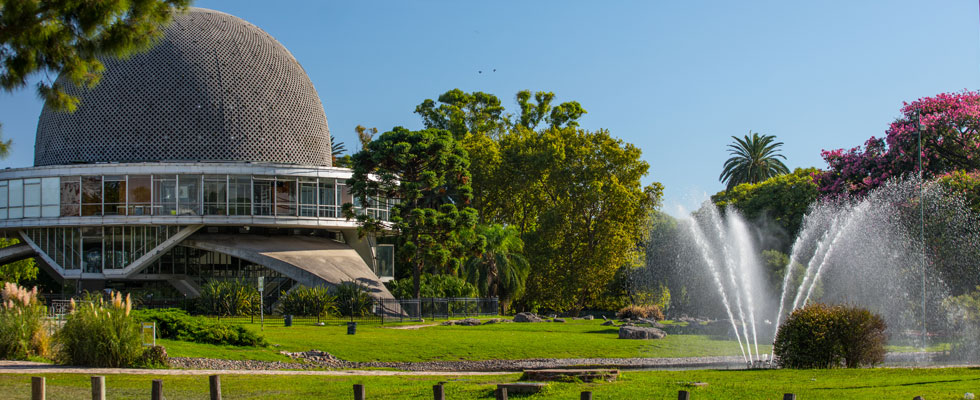
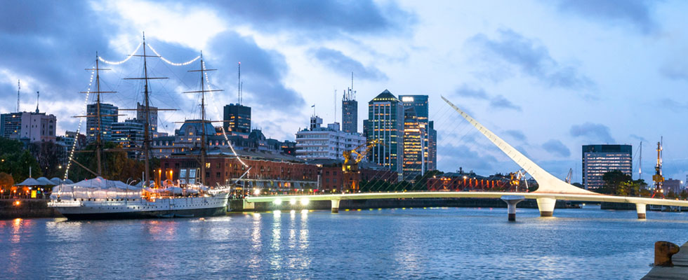
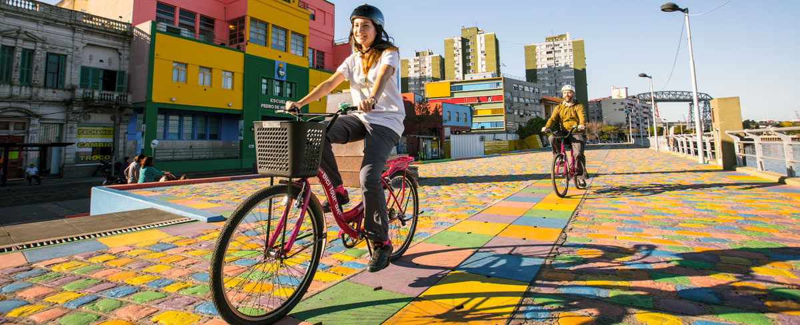

Buenos Aires
La Ciudad Autónoma de Buenos Aires, tal como figura en su propia Constitución desde 1996, es la capital y ciudad de la República Argentina de gobierno autónomo
Lugares turisticos
1.Palermo
Uno de los destinos turísticos top y más importantes de Buenos Aires es Palermo, el barrio más grande y más moderno para hacer turismo en la ciudad, y uno de los mejores barrios para buscar alojamiento en Buenos Aires. Usted puede elegir entre un apartamento amueblado, un hostel, un hotel o un apart hotel, todos los cuales varían en precio y tipo. Palermo es un barrio de Buenos Aires con mucha vida, pero muy seguro, con una variedad de actividades para hacer ya sea en el día o en la noche. Todo se puede encontrar dentro de unas pocas cuadras: algunos de los mejores restaurantes de Buenos Aires, tiendas de diseñadores de moda, pubs, bares y discotecas. Palermo tiene varias subdivisiones como Palermo Soho (llamado así por el Soho de Nueva York) y Palermo Hollywood (debido a que allí se encuentran algunos estudios de televisión, radio y cine
Plaza Serrano
Restaurantes, bares, artesanos y diseñadores urbanos comercializan sus productos en este lugar los fines de semana. Ubicacion: En la intersección de Borges al 1600 - Honduras al 4700 - Serrano al 1500.
Jardín Botánico
Este Monumento Nacional, de casi 170 años de antigüedad, ha sido cuidadosamente diseñado con más de 5.000 especies de plantas, hermosas esculturas e invernaderos. Ubicación: Plaza Italia y Santa Fe al 3900.
Bosques de Palermo
El parque y sus alrededores son unos de los mejores lugares de Buenos Aires para visitar. Decorado con jardines de rosas, bosques y lagos, es el lugar perfecto para disfrutar como parte de un tour por la ciudad de Buenos Aires. Desde el lado noreste del parque se puede llegar al Río de la Plata y su hermoso paseo marítimo, Costanera Norte.Ubicación: Avenida Sarmiento, Avenida del Libertador del 3500 al 5000, Avenida Costanera Rafael Obligado.
2.Puerto Madero
Este barrio frente a la costa de Buenos Aires es la parte más moderna de la ciudad. Con imponentes rascacielos de cristal, elegantes restaurantes y discotecas de moda, Puerto Madero es disfrutado por ricos y famosos. Es un barrio joven que salió del mayor proyecto de urbanización de la historia de Buenos Aires. En 1993, el gobierno de la ciudad remodeló los viejos muelles que habían formado parte del puerto, dándole paso a oportunidades para un nuevo desarrollo en la ciudad, en una zona segura e ideal para el ocio y la vida de lujo. Puerto Madero es hoy en día considerado como el centro de negocios más importante y además una de las atracciones turísticas que no se pueden perder cuando estén de turismo en Buenos Aires.
Puente de la Mujer
Este puente peatonal es un hito en la historia arquitectónica de Buenos Aires y es imposible que pase desapercibido. Fue diseñado por el famoso arquitecto español Santiago Calatrava. Un ala blanca se dispara desde la acera del puente. Para algunos lugareños el Puente de la Mujer se asemeja a una mujer bailando tango. Ubicación: Dique 3 de Puerto Madero.
Reserva Ecológica
Detrás de esta maravillosa pieza arquitectónica moderna de Puerto Madero, en la animada Costanera Sur, está la Reserva Ecológica. Un increíble y tranquilo escondite, definitivamente el lugar para escapar de todo el ajetreo y el bullicio de Buenos Aires, por si necesita de algunas unas horas de paz y tranquilidad al aire libre. Lleno de impresionante flora y fauna, es un lugar turístico ideal para caminar o andar en bicicleta por los senderos que conducen al Río de la Plata. Ubicación: Avenida Tristán Achaval Rodríguez al 1500
3.La boca
Un barrio colorido y encantador justo al lado del antiguo puerto de Buenos Aires. La Boca es sinónimo de tango y el fútbol. Con sus multicolores casas y tabernas, el barrio se aferra a su tradición de tango, pasión por el fútbol y las raíces italianas. Hoy en día es uno de los centros culturales más importantes y atractivos turísticos de Buenos Aires, gracias a la variedad de excursiones a pie, los partidos de fútbol en el famoso estadio de Boca y sus shows de tango.
Caminito
El nombre de una famosa canción de tango compuesta por el famoso cantante Carlos Gardel, Caminito, es un museo al aire libre sobre el tango y un mercado de arte. Sus calles empedradas, casas de colores brillantes y originales obras de arte alrededor de todo el vecindario son un espectáculo poco común, algo que usted no verá en ningún otro lugar del mundo. Restaurantes tradicionales cuentan con espectáculos de tango en vivo, así como bailarines y músicos que están mostrando su talento. Una visita a Caminito no se puede dejar fuera en sus vacaciones en Buenos Aires. Ubicación: Avenida Pedro de Mendoza al 1800.
Estadio de Boca Juniors
El colorido azul y amarillo del Estadio del Boca Juniors es uno de los monumentos más famosos de Buenos Aires y atrae a miles de argentinos y extranjeros por igual. En un partido de fútbol en este estadio de Buenos Aires, se puede sentir la pasión pura e increíble devoción que los hinchas del Boca tienen por su equipo. Si usted es un fanático del fútbol, no se puede perder la oportunidad de experimentar el fútbol argentino en vivo y en directo. ¡Experimenté la pasión argentina de cerca! Reserve una excursión fútbol y consiga sus entradas de forma fácil aquí.Un dato interesante: El estadio se llama La Bombonera porque su forma que se asemeja a una caja de chocolates. Ubicación: Calle Brandsen al 800